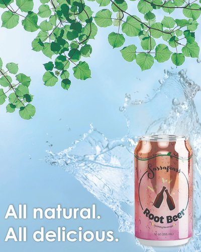
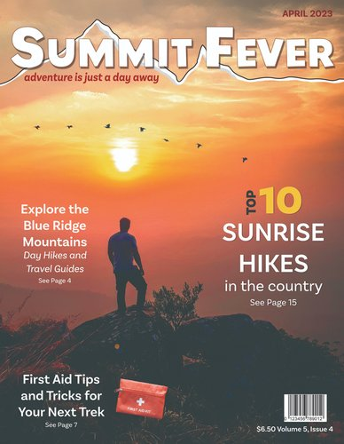
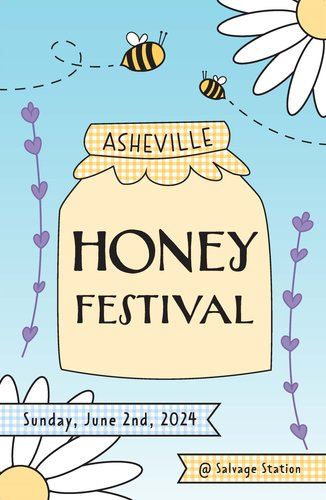
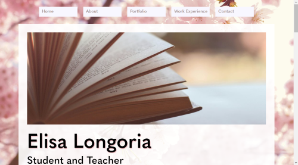
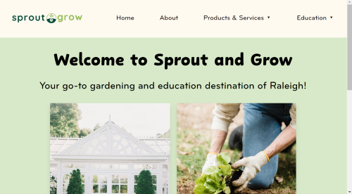
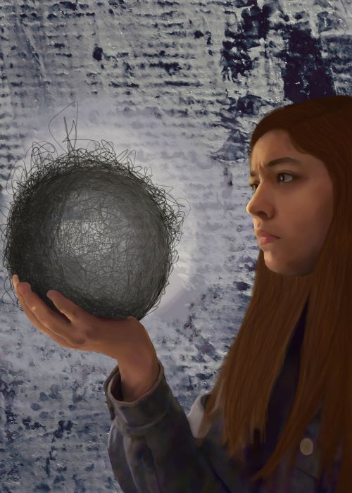

Elisa Longoria Designs
Beverage Campaign
Magazine Cover
Promotional Poster
Resume Website
Gardening Website
About Me
After studying Music Therapy at Appalachian State University, I decided to expand my knowledge of graphic and web design at Wake Technical University. I have designed logos, social media posts, posters, and more utilizing Adobe Suite and have learned HTML and CSS for web development and web design.